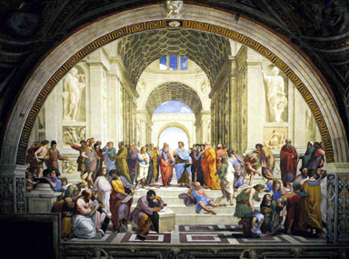

Teaching
My fundamental goal as an instructor is to help students become independent critical thinkers. My curriculum development work has focused specifically on how inclusion of history and philosophy of biology can address misconceptions, and promote learning of science content and issues associated with the nature of science. A teaching portfolio summarizes my teaching experience. A list of courses I no longer teach is located here.

Undergraduate level:
- BIOS 1120 Principles of Biology

Graduate level:On-line courses (offered via e-learning)
- SCI 6140 Science: Historical and Philosophical Perspectives
- SCI 6150 Science Education: Historical and Philosophical Perspectives
- SCI 6170/6171 Early Research Experience I & II
- SCI 6145 Intro to Hist. & Phil. Of Sci. (this is an on-line equivalent of SCI 6140 for MA students only) -last offered Spring 2015
- SCI 6155 Sci. Ed.: History & Philosophy (this is an on-line equivalent of SCI 6150 for MA students only) -last offered Fall 2013
- SCI 6185 Tchg/Lrng in Coll Sci Classrm (this is an on-line equivalent of SCI 6180 for MA students and PhD students outside of MISE) -last offered Spring 2018